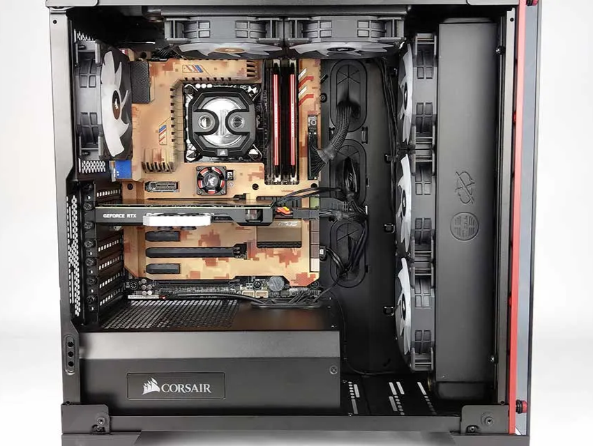
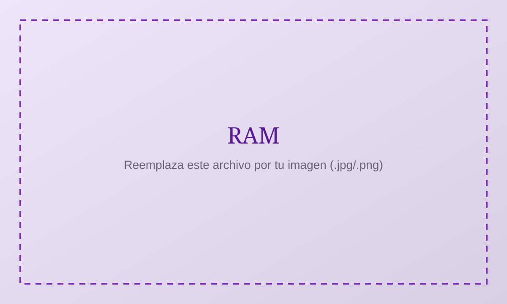
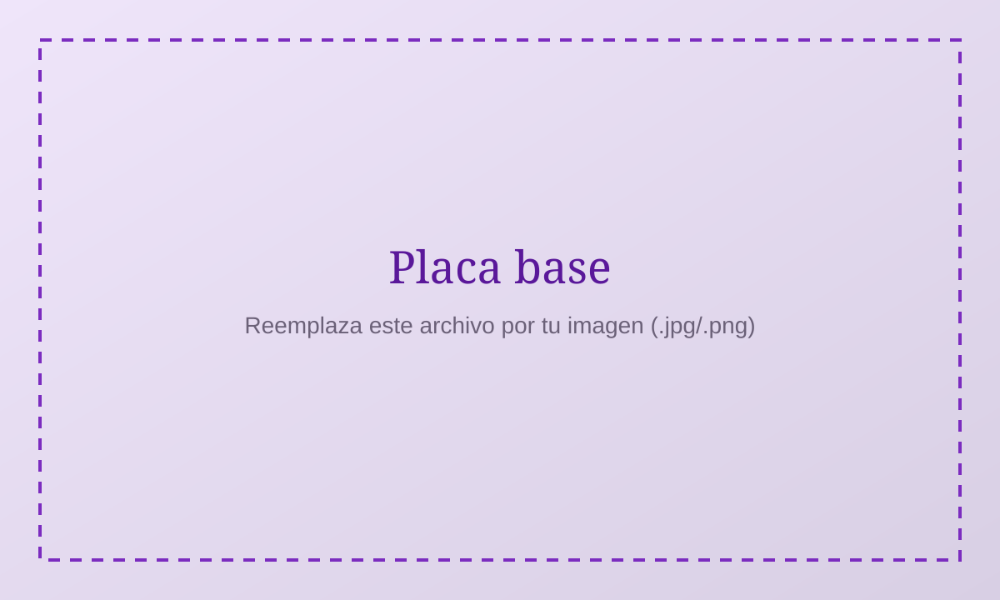
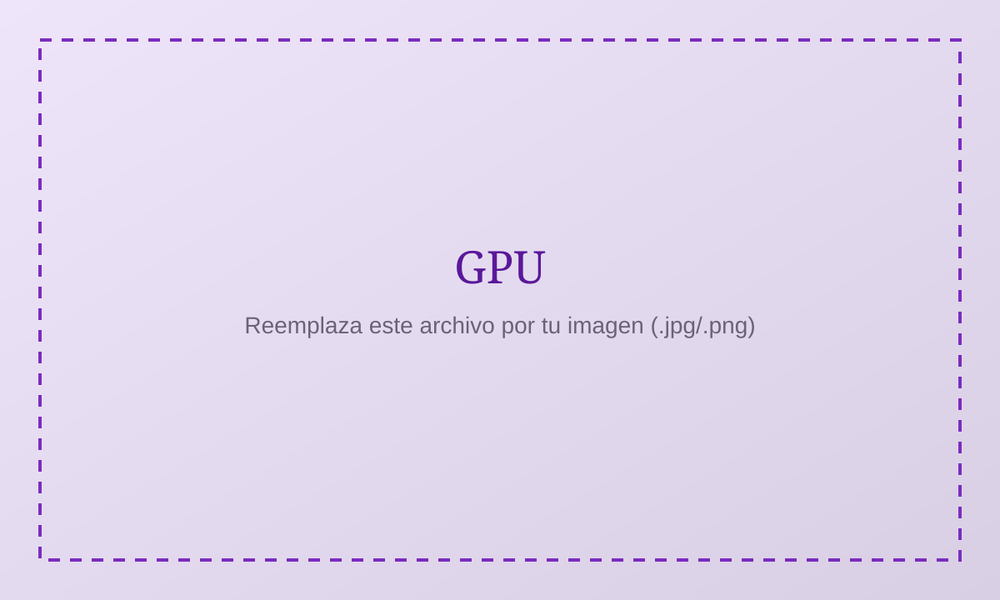

¿Qué es un componente de hardware?
Un componente es una pieza física del computador que realiza una función específica. Algunos procesan información, otros la almacenan de forma temporal o permanente, y otros permiten la comunicación entre el resto de partes del sistema.
En conjunto, estos componentes forman la máquina sobre la cual trabaja el sistema operativo. El SO no reemplaza al hardware: lo organiza, lo protege y ofrece una interfaz para que las aplicaciones lo utilicen de manera ordenada.

Reemplaza esta imagen en img/conocimientos/componentes-pc.svg
¿Por qué importa esto en sistemas operativos?
Conceptos como procesos, memoria virtual, drivers o sistemas de archivos solo tienen sentido si se entiende qué recurso físico se está administrando. Por ejemplo:
- La CPU ejecuta instrucciones; el SO decide qué proceso la usa en cada momento.
- La RAM guarda datos en ejecución; el SO asigna y libera memoria para cada programa.
- El almacenamiento conserva archivos; el SO organiza directorios, permisos y acceso a disco.
- La GPU procesa gráficos; el SO y los controladores median el acceso a ese recurso.
- La placa base conecta todo; sin esa comunicación, el SO no podría coordinar el sistema.
Componentes principales
A continuación se describe cada componente. Al final encontrarás un resumen interactivo con sus funciones.
CPU (Unidad Central de Procesamiento)
Es el “cerebro” del computador. Ejecuta las instrucciones de los programas, realiza cálculos y coordina gran parte del trabajo del sistema. Puede tener varios núcleos e hilos para atender varias tareas.
Reemplaza esta imagen en img/conocimientos/cpu.svg
RAM (Memoria de acceso aleatorio)
Es la memoria de trabajo donde se cargan el sistema operativo, los programas abiertos y los datos activos. Más RAM suele permitir más aplicaciones simultáneas; el SO administra cuánta memoria recibe cada proceso.

Reemplaza esta imagen en img/conocimientos/ram.svg
Placa base (Motherboard)
Es la tarjeta principal que conecta CPU, RAM, GPU, almacenamiento, puertos y tarjetas de expansión. También ayuda a distribuir energía y define compatibilidades del hardware.

Reemplaza esta imagen en img/conocimientos/placa-base.svg
GPU (Unidad de procesamiento gráfico)
Se especializa en cálculos paralelos, especialmente renderizado de imágenes y vídeo. Puede estar integrada en la CPU o presentarse como una tarjeta dedicada.

Reemplaza esta imagen en img/conocimientos/gpu.svg
Unidad de almacenamiento (HDD / SSD)
Conserva el sistema operativo, las aplicaciones y los archivos del usuario aunque el computador esté apagado. El SO organiza esa información mediante sistemas de archivos, carpetas y permisos.
Reemplaza esta imagen en img/conocimientos/almacenamiento.svg